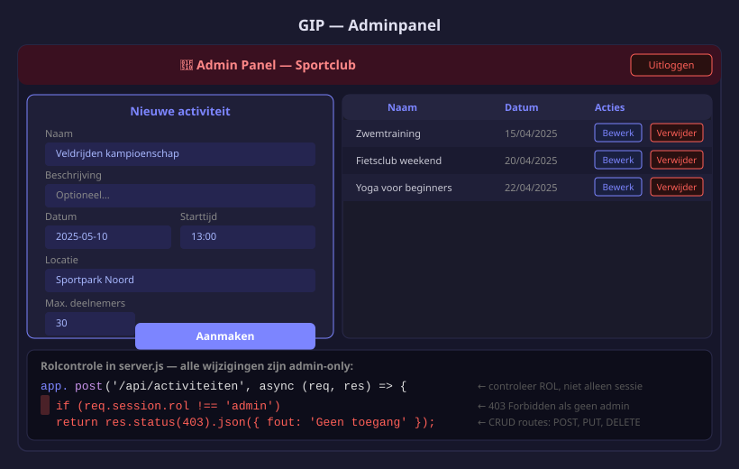

Adminpanel & afwerking
- Admin-routes schrijven die alle activiteiten van alle gebruikers kunnen beheren
- Rolcontrole toepassen zodat alleen admins de pagina's bereiken
- Data doorgeven van de ene pagina naar de andere via een URL-parameter (
?id=5) - URL-parameters uitlezen met
URLSearchParamsen de bijhorende data ophalen van de server - Een formulier automatisch invullen met bestaande data
- De README.md schrijven voor je GIP-indiening
- Een professionele gebruikershandleiding schrijven als onderdeel van de README
- Een demo van je GIP voorbereiden en presenteren
In dit hoofdstuk splitsen we het adminpanel op in drie pagina's. Elke pagina heeft één verantwoordelijkheid:
admin.html— overzichtstabel van alle activiteiten + Verwijder-knopadd.html— formulier om een nieuwe activiteit aan te makenedit.html?id=5— formulier om een bestaande activiteit te bewerken; hetidstaat in de URL
Zo leer je meteen hoe je data meestuurt van de ene pagina naar de andere: via een query parameter in de URL. Dat is een veelgebruikt patroon in webapplicaties.

1. Server routes in server.js
De admin werkt op alle activiteiten, ongeacht wie ze heeft aangemaakt. Voeg een isAdmin-middleware toe. Je hebt ook een nieuwe GET-route nodig die één activiteit ophaalt — edit.html heeft die nodig om het formulier in te vullen.
In H05 controleerden PUT en DELETE of user_id = req.session.gebruikerId. De admin-routes doen dit niet: de admin mag elke activiteit bewerken of verwijderen, ongeacht de eigenaar.
// ── isAdmin-middleware ────────────────────────────────────────────────────────
// Combineert twee controles:
// 1. Is de gebruiker ingelogd? → anders 401 Unauthorized
// 2. Heeft de gebruiker de admin-rol? → anders 403 Forbidden
function isAdmin(req, res, next) {
if (!req.session.gebruikerId) {
return res.status(401).json({ fout: 'Inloggen vereist' });
}
if (req.session.rol !== 'admin') {
return res.status(403).json({ fout: 'Geen toegang' });
}
next();
}
// ── GET /api-admin/activiteiten — alle activiteiten met aanmakernaam ────────────────
// Geen middleware: iedereen mag de lijst ophalen (ook gewone gebruikers).
// Vervang de GET-route uit H03 door deze versie met LEFT JOIN.
app.get('/api-admin/activiteiten', async (req, res) => {
const [rijen] = await pool.execute(`
SELECT
a.*,
u.naam AS aangemaakt_door
FROM activiteiten a
LEFT JOIN users u ON u.id = a.user_id
ORDER BY a.datum ASC
`);
res.json(rijen);
});
// ── GET /api-admin/activiteiten/:id — één activiteit ophalen ────────────────────────
// Nieuw in H06: edit.html vraagt deze route op om het formulier in te vullen.
// De browser stuurt: GET /api-admin/activiteiten/5
// De server zoekt activiteit met id=5 en stuurt het terug als JSON.
app.get('/api-admin/activiteiten/:id', isAdmin, async (req, res) => {
const [rijen] = await pool.execute(
'SELECT * FROM activiteiten WHERE id = ?',
[req.params.id]
);
if (rijen.length === 0) {
return res.status(404).json({ fout: 'Niet gevonden' });
}
res.json(rijen[0]);
});
// ── POST /api-admin/activiteiten — enkel admin ──────────────────────────────────────
app.post('/api-admin/activiteiten', isAdmin, async (req, res) => {
const { naam, beschrijving, datum, starttijd, locatie, max_deelnemers } = req.body;
if (!naam || !datum || !starttijd) {
return res.status(400).json({ fout: 'Naam, datum en starttijd zijn verplicht' });
}
const [r] = await pool.execute(
`INSERT INTO activiteiten
(naam, beschrijving, datum, starttijd, locatie, max_deelnemers, user_id)
VALUES (?, ?, ?, ?, ?, ?, ?)`,
[naam, beschrijving || null, datum, starttijd,
locatie || null, max_deelnemers || 20, req.session.gebruikerId]
);
res.status(201).json({ id: r.insertId, bericht: 'Activiteit aangemaakt' });
});
// ── PUT /api-admin/activiteiten/:id — enkel admin, GEEN eigendomscontrole ───────────
app.put('/api-admin/activiteiten/:id', isAdmin, async (req, res) => {
const { naam, beschrijving, datum, starttijd, locatie, max_deelnemers } = req.body;
await pool.execute(
`UPDATE activiteiten
SET naam=?, beschrijving=?, datum=?, starttijd=?, locatie=?, max_deelnemers=?
WHERE id=?`,
[naam, beschrijving || null, datum, starttijd,
locatie || null, max_deelnemers || 20, req.params.id]
);
res.json({ bericht: 'Activiteit bijgewerkt' });
});
// ── DELETE /api-admin/activiteiten/:id — enkel admin, GEEN eigendomscontrole ────────
app.delete('/api-admin/activiteiten/:id', isAdmin, async (req, res) => {
await pool.execute('DELETE FROM activiteiten WHERE id=?', [req.params.id]);
res.status(204).end();
});2. admin.html + admin.js — overzichtstabel
admin.html toont enkel de tabel. De knoppen Bewerk en Nieuw navigeren naar aparte pagina's — ze sturen geen data via JavaScript maar via de URL.
<!-- Client/admin.html -->
<!DOCTYPE html>
<html lang="nl">
<head>
<meta charset="UTF-8">
<title>Adminpanel — Sportclub</title>
<link rel="stylesheet" href="style.css">
</head>
<body>
<header>
<h1>⚽ Sportclub — Adminpanel</h1>
<nav>
<a href="admin.html" class="actief">Activiteiten</a>
<button id="logout-btn">Uitloggen</button>
</nav>
</header>
<main>
<div class="container">
<div style="display:flex; justify-content:space-between; align-items:center; margin-bottom:1rem;">
<h2>Alle activiteiten</h2>
<!-- Navigeer gewoon naar add.html — geen JavaScript nodig -->
<a href="add.html">+ Nieuwe activiteit</a>
</div>
<div id="activiteiten-tabel">Laden...</div>
</div>
</main>
<script type="module" src="js/admin.js"></script>
</body>
</html>// Client/js/admin.js
async function init() {
const res = await fetch('/api/mij');
if (!res.ok) { window.location.href = '/login.html'; return; }
const gebruiker = await res.json();
if (gebruiker.rol !== 'admin') { window.location.href = '/dashboard.html'; return; }
laadActiviteiten();
}
async function laadActiviteiten() {
const res = await fetch('/api-admin/activiteiten');
const activiteiten = await res.json();
const container = document.getElementById('activiteiten-tabel');
if (activiteiten.length === 0) {
container.innerHTML = '<p>Nog geen activiteiten.</p>';
return;
}
container.innerHTML = `
<table>
<thead>
<tr>
<th>Naam</th><th>Datum</th><th>Aanvang</th>
<th>Locatie</th><th>Max.</th>
<th>Aangemaakt door</th><th>Acties</th>
</tr>
</thead>
<tbody>
${activiteiten.map(act => `
<tr>
<td>${act.naam}</td>
<td>${new Date(act.datum).toLocaleDateString('nl-BE')}</td>
<td>${act.starttijd.slice(0,5)}</td>
<td>${act.locatie || '—'}</td>
<td>${act.max_deelnemers}</td>
<td>${act.aangemaakt_door || '—'}</td>
<td>
<!-- Bewerk: navigeer naar edit.html en geef het id mee via ?id= -->
<!-- edit.html leest dit id uit de URL en laadt de juiste data -->
<a href="edit.html?id=${act.id}">Bewerk</a>
<button data-actie="verwijderen" data-id="${act.id}">Verwijder</button>
</td>
</tr>
`).join('')}
</tbody>
</table>`;
}
// Event delegation — voorkomt conflicten met ES-modules
// onclick in template literals is niet toegankelijk vanuit een module-scope
document.getElementById('activiteiten-tabel').addEventListener('click', async function(e) {
const btn = e.target.closest('[data-actie="verwijderen"]');
if (!btn) return;
if (!confirm('Activiteit verwijderen?')) return;
await fetch('/api-admin/activiteiten/' + btn.dataset.id, { method: 'DELETE' });
laadActiviteiten();
});
document.getElementById('logout-btn').addEventListener('click', async () => {
await fetch('/api/logout', { method: 'POST' });
window.location.href = '/login.html';
});
init();3. add.html + add.js — nieuwe activiteit aanmaken
Een eenvoudige formulierpagina. Na een geslaagde POST stuurt add.js de admin terug naar admin.html.
<!-- Client/add.html -->
<!DOCTYPE html>
<html lang="nl">
<head>
<meta charset="UTF-8">
<title>Nieuwe activiteit — Sportclub</title>
<link rel="stylesheet" href="style.css">
</head>
<body>
<header>
<h1>⚽ Sportclub — Adminpanel</h1>
<nav><a href="admin.html">← Terug naar overzicht</a></nav>
</header>
<main>
<div class="container">
<h2>Nieuwe activiteit</h2>
<p id="foutmelding" hidden></p>
<form id="activiteit-form">
<label>Naam *<input type="text" id="naam" required></label>
<label>Beschrijving<textarea id="beschrijving"></textarea></label>
<label>Datum *<input type="date" id="datum" required></label>
<label>Starttijd *<input type="time" id="starttijd" required></label>
<label>Locatie<input type="text" id="locatie"></label>
<label>Max. deelnemers<input type="number" id="max_deelnemers" value="20" min="1"></label>
<div style="display:flex; gap:0.5rem; margin-top:1rem;">
<button type="submit">Aanmaken</button>
<a href="admin.html">Annuleren</a>
</div>
</form>
</div>
</main>
<script type="module" src="js/add.js"></script>
</body>
</html>// Client/js/add.js
// ── Toegangscontrole ──────────────────────────────────────────────────────────
async function init() {
const res = await fetch('/api/mij');
if (!res.ok) { window.location.href = '/login.html'; return; }
const gebruiker = await res.json();
if (gebruiker.rol !== 'admin') { window.location.href = '/dashboard.html'; return; }
}
// ── Formulier verzenden ───────────────────────────────────────────────────────
document.getElementById('activiteit-form').addEventListener('submit', async (e) => {
e.preventDefault();
const body = {
naam: document.getElementById('naam').value,
beschrijving: document.getElementById('beschrijving').value,
datum: document.getElementById('datum').value,
starttijd: document.getElementById('starttijd').value,
locatie: document.getElementById('locatie').value,
max_deelnemers: document.getElementById('max_deelnemers').value,
};
const res = await fetch('/api-admin/activiteiten', {
method: 'POST',
headers: { 'Content-Type': 'application/json' },
body: JSON.stringify(body),
});
if (res.ok) {
// Geslaagd → terug naar het overzicht
window.location.href = '/admin.html';
} else {
const data = await res.json();
const fout = document.getElementById('foutmelding');
fout.textContent = data.fout;
fout.hidden = false;
}
});
init();4. edit.html + edit.js — activiteit bewerken
Wanneer de admin op Bewerk klikt in de tabel, navigeert de browser naar edit.html?id=5. De ?id=5 is een query parameter: een stukje data dat aan de URL is vastgeplakt.
edit.js leest dit id uit de URL, haalt de activiteit op van de server en vult het formulier in. Zo hoeft er geen extra informatie via JavaScript van pagina naar pagina te reizen — de URL doet het werk.
// window.location.search bevat alles na het vraagteken in de URL
// Voorbeeld: als de URL 'edit.html?id=5' is, is search gelijk aan '?id=5'
const params = new URLSearchParams(window.location.search);
// params.get('id') geeft de waarde van de parameter 'id' terug — hier: '5'
const id = params.get('id');
// Als er geen id in de URL staat, is er iets mis → terug naar overzicht
if (!id) { window.location.href = '/admin.html'; return; }<!-- Client/edit.html -->
<!DOCTYPE html>
<html lang="nl">
<head>
<meta charset="UTF-8">
<title>Activiteit bewerken — Sportclub</title>
<link rel="stylesheet" href="style.css">
</head>
<body>
<header>
<h1>⚽ Sportclub — Adminpanel</h1>
<nav><a href="admin.html">← Terug naar overzicht</a></nav>
</header>
<main>
<div class="container">
<h2>Activiteit bewerken</h2>
<p id="foutmelding" hidden></p>
<form id="activiteit-form">
<label>Naam *<input type="text" id="naam" required></label>
<label>Beschrijving<textarea id="beschrijving"></textarea></label>
<label>Datum *<input type="date" id="datum" required></label>
<label>Starttijd *<input type="time" id="starttijd" required></label>
<label>Locatie<input type="text" id="locatie"></label>
<label>Max. deelnemers<input type="number" id="max_deelnemers" min="1"></label>
<div style="display:flex; gap:0.5rem; margin-top:1rem;">
<button type="submit">Opslaan</button>
<a href="admin.html">Annuleren</a>
</div>
</form>
</div>
</main>
<script type="module" src="js/edit.js"></script>
</body>
</html>// Client/js/edit.js
// ── Stap 1: id uit de URL lezen ───────────────────────────────────────────────
// De URL ziet er zo uit: edit.html?id=5
// window.location.search geeft '?id=5' terug
const params = new URLSearchParams(window.location.search);
const id = params.get('id'); // '5' (altijd een string)
// Geen id in de URL → ongeldige toegang, terug naar overzicht
if (!id) { window.location.href = '/admin.html'; }
// ── Stap 2: toegangscontrole + data laden ─────────────────────────────────────
async function init() {
// Controleer of de gebruiker ingelogd is als admin
const checkRes = await fetch('/api/mij');
if (!checkRes.ok) { window.location.href = '/login.html'; return; }
const gebruiker = await checkRes.json();
if (gebruiker.rol !== 'admin') { window.location.href = '/dashboard.html'; return; }
// Haal de activiteit op via GET /api-admin/activiteiten/:id
// De server geeft één JSON-object terug met alle velden van die activiteit
const actRes = await fetch('/api-admin/activiteiten/' + id);
if (!actRes.ok) {
// Activiteit bestaat niet (of geen rechten) → terug naar overzicht
window.location.href = '/admin.html';
return;
}
const act = await actRes.json();
// ── Stap 3: formulier invullen met de ontvangen data ─────────────────────
// Elk veld krijgt de waarde die van de server komt
document.getElementById('naam').value = act.naam;
document.getElementById('beschrijving').value = act.beschrijving || '';
// datum komt als '2026-05-15T00:00:00.000Z' → slice(0,10) geeft '2026-05-15'
document.getElementById('datum').value = act.datum.slice(0, 10);
// starttijd komt als '14:30:00' → slice(0,5) geeft '14:30'
document.getElementById('starttijd').value = act.starttijd.slice(0, 5);
document.getElementById('locatie').value = act.locatie || '';
document.getElementById('max_deelnemers').value = act.max_deelnemers;
}
// ── Stap 4: formulier opslaan via PUT ─────────────────────────────────────────
document.getElementById('activiteit-form').addEventListener('submit', async (e) => {
e.preventDefault();
const body = {
naam: document.getElementById('naam').value,
beschrijving: document.getElementById('beschrijving').value,
datum: document.getElementById('datum').value,
starttijd: document.getElementById('starttijd').value,
locatie: document.getElementById('locatie').value,
max_deelnemers: document.getElementById('max_deelnemers').value,
};
// PUT /api-admin/activiteiten/5 — id zit al vast in de variabele 'id' bovenaan
const res = await fetch('/api-admin/activiteiten/' + id, {
method: 'PUT',
headers: { 'Content-Type': 'application/json' },
body: JSON.stringify(body),
});
if (res.ok) {
// Geslaagd → terug naar overzicht
window.location.href = '/admin.html';
} else {
const data = await res.json();
const fout = document.getElementById('foutmelding');
fout.textContent = data.fout;
fout.hidden = false;
}
});
init();| Pagina | URL | Wat gebeurt er? |
|---|---|---|
admin.html | /admin.html | Tabel laden, Verwijder-knop, link naar add/edit |
add.html | /add.html | Leeg formulier, POST naar server, redirect |
edit.html | /edit.html?id=5 | id uit URL lezen, data ophalen, formulier invullen, PUT naar server, redirect |
5. README.md schrijven
# Sportclub Ledenportaal
Webapplicatie voor het beheren van sportclubactiviteiten en ledeninschrijvingen.
## Installatie
1. **Database aanmaken:** Voer `sportclub_db.sql` uit in MySQL Workbench
2. **Wachtwoord instellen:** Pas `password` aan in `Server/server.js`
3. **Packages installeren:** `cd Server && npm install`
4. **Server starten:** `npm start`
5. Open `http://localhost:3000`
## Testaccounts
| E-mail | Wachtwoord | Rol |
|--------|------------|-----|
| admin@sportclub.be | Admin1234! | Admin |
| jana@leden.be | Lid12345! | Lid |Gebruikershandleiding
De README heeft twee publieken — de developer (installatie-instructies) en de eindgebruiker (hoe gebruik ik de app?). Het gebruikersgedeelte noemen we de Gebruikershandleiding.
Verplichte onderdelen van de Gebruikershandleiding in de README:
- Screenshot van de startpagina met een korte uitleg van de onderdelen
- Stap-voor-stap: een account aanmaken (genummerde stappen)
- Stap-voor-stap: een activiteit toevoegen (genummerde stappen)
- Admin-functies: beschrijving van wat de admin kan doen (activiteiten toevoegen, bewerken, verwijderen)
- FAQ: minimaal 3 veelgestelde vragen met antwoord
## Gebruikershandleiding
### Startpagina
<!-- screenshot: startpagina -->
De startpagina toont alle openbare activiteiten. Bovenaan vind je de navigatiebalk met Login en Registreren.
### Een account aanmaken
1. Klik op **Registreren** in de navigatiebalk
2. Vul je gebruikersnaam en wachtwoord in
3. Klik op **Maak account aan**
4. Je wordt automatisch ingelogd en doorgestuurd naar je dashboard
### Een activiteit toevoegen
1. Log in met je account
2. Ga naar **Mijn dashboard**
3. Klik op **Nieuwe activiteit**
4. Vul de naam, datum en tijden in
5. Klik op **Opslaan**
### Admin-functies
Als admin zie je een extra knop **Adminpanel** in de navigatie.
Het adminpanel toont alle activiteiten van alle gebruikers.
Gebruik **Bewerk** om een activiteit aan te passen of **Verwijder** om ze te wissen.
### FAQ
**Ik ben mijn wachtwoord vergeten — wat nu?**
Neem contact op met de beheerder.
**Kan ik activiteiten van andere gebruikers zien?**
Alleen admins kunnen alle activiteiten zien. Als gewone gebruiker zie je enkel je eigen activiteiten.
**Hoe weet ik of ik admin ben?**
Als je de knop "Adminpanel" ziet in de navigatiebalk, ben je admin.Demo voorbereiden
Je GIP eindigt met een mondelinge verdediging. Je toont je applicatie live en legt uit welke technische keuzes je gemaakt hebt.
Checklist voor de demo:
- Zorg dat je lokale server draait (
node server.js) - Zorg dat je database verbonden is en testdata heeft
- Bereid een scenario voor: "Ik log in als Jan, voeg een activiteit toe, log uit, log in als admin, pas de activiteit aan"
- Weet welke packages je gebruikt en WAAROM (bv. "bcrypt gebruik ik voor het hashen van wachtwoorden")
- Bereid antwoorden voor op: "Waarom heb je voor Node.js gekozen?" en "Wat zou je anders doen als je opnieuw begon?"
De verdediging duurt 10 minuten demo + 5 minuten vragen van de leerkracht.
6. Eindchecklist voor indiening
- Alle features werken (register, login, eigen activiteiten beheren, adminpanel)
README.mdaanwezig met installatie-instructies en testaccounts- README bevat een Gebruikershandleiding met screenshots, stap-voor-stap en FAQ
- Werklog is bijgewerkt tot de inleverdatum
sportclub_db.sqlaanwezig in de rootnode_modules/staat in.gitignore- Code netjes en leesbaar (duidelijke variabelenamen, geen commentaar-rommel)
- Alles gecommit en gepusht naar GitHub
| H | Inhoud |
|---|---|
| H01 | Project opzetten |
| H02 | Database aanmaken |
| H03 | Activiteiten API |
| H04 | Register & login |
| H05 | Gebruikersdashboard — eigen activiteiten beheren |
| H06 | Adminpanel & afwerking |
Oefeningen
Zet de nieuwe adminstructuur op met aparte pagina's voor aanmaken en bewerken.
- Voeg de
isAdmin-middleware en de nieuweGET /api-admin/activiteiten/:id-route toe aanserver.js - Maak
admin.html+admin.jsaan — tabel met Bewerk-link (edit.html?id=X) en Verwijder-knop - Maak
add.html+add.jsaan — leeg formulier dat POST stuurt en redirect naaradmin.html - Maak
edit.html+edit.jsaan — leest het id uit de URL, haalt data op, vult formulier in - Log in als admin, klik op Bewerk bij een activiteit en controleer dat de velden gevuld zijn
- Sla de wijziging op → je ziet de bijgewerkte activiteit in de tabel
Verdiep je in hoe data via de URL wordt doorgegeven.
- Open de browser-console op
edit.html?id=3en typ:new URLSearchParams(window.location.search).get('id')— wat krijg je terug? - Navigeer manueel naar
edit.html(zonder?id=) — wat doetedit.jsen waarom? - Navigeer als ingelogd lid (niet admin) naar
add.htmlen open de browser-netwerktab. Welke API-call blokkeert de toegang?
Test de beveiliging en rond het project af.
- Probeer als lid een activiteit te verwijderen via de browser-console:
fetch('/api-admin/activiteiten/1', {method:'DELETE'})→ 403 verwacht - Schrijf de README.md
- Zorg dat
sportclub_db.sqlaanwezig is - Maak een finale commit op GitHub
Huistaak
Opdracht: Volledig GIP indienen
Deel 1 — 4 punten: Adminpanel
- Rolcontrole op POST, PUT, DELETE routes
- admin.html met formulier en overzichtstabel
- admin.js: aanmaken, bewerken, verwijderen, toegangscontrole
Deel 2 — 3 punten: Documentatie
- README.md met installatie-instructies en testaccounts
- sportclub_db.sql aanwezig
Deel 3 — 3 punten: GitHub
- Alle code op GitHub gepusht
- node_modules/ niet in de repository
- Duidelijke commit-messages
Vragenlijst
Controleer of je de leerstof van dit hoofdstuk begrijpt.
De admin klikt op Bewerk bij activiteit 7. Naar welke URL navigeert de browser?
Hoe leest edit.js het id uit de URL edit.html?id=7?
Welke server-route heeft edit.js nodig om het formulier in te vullen?
Welke HTTP-methode gebruik je om een bestaande activiteit op te slaan?
De admin navigeert naar edit.html zonder ?id=. Wat doet edit.js?